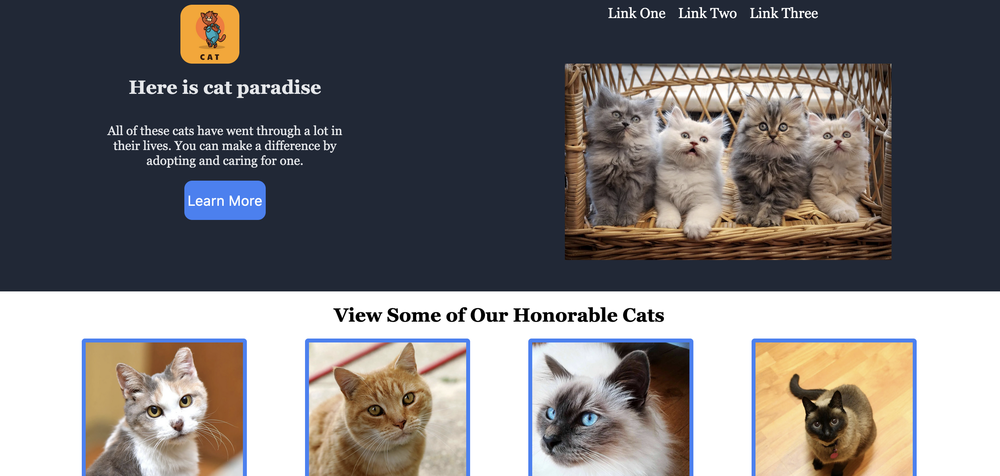

Battleship
Desktop client for playing battleship on your local area network.
Inspired and driven to try new ways of challenging my programming skills.
I'm a second year graduate student pursuing a Masters in Computer Science at NYU Tandon School of Engineering, with a strong passion for integrating cutting-edge technologies into my daily life. I have experience working with Java, Python, MySQL, Kotlin, C, HTML, and CSS. My interests in the technology field are in mobile and desktop applications, databases, user accessability, and computer security. In my spare time, I like to listen to music, try photography, and do martial arts.
Check out some of the cool stuff that I've been working. I plan on coming back and listing more projects over time, so stay tuned for the updates!
Desktop client for playing battleship on your local area network.

A mockup of an apartment rental service using databases.

A mockup concept of a cat adoption site.

A song identifying app that utilizes lyrics from voice input.
_adobespark.jpeg)
An eBay/Craigslist inspired application where clients can connect to a server and either upload or purchase items for sale.
This was my submission for the hackathon hosted by the ACM chapter at Adelphi University.

Here is my blog where I post some of the pictures that I take and edit. I cover various elements and themes.
View some of the other various side projects and coursework I have done.